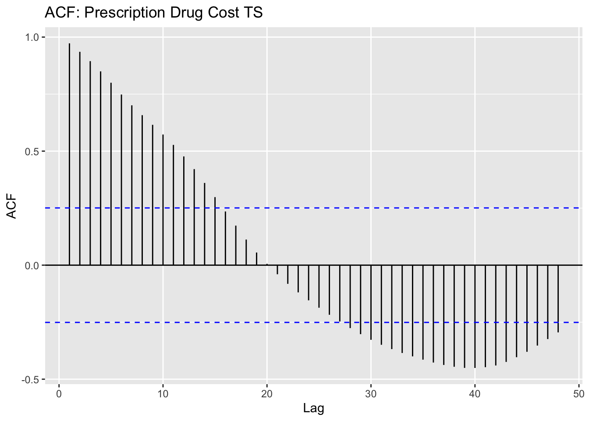
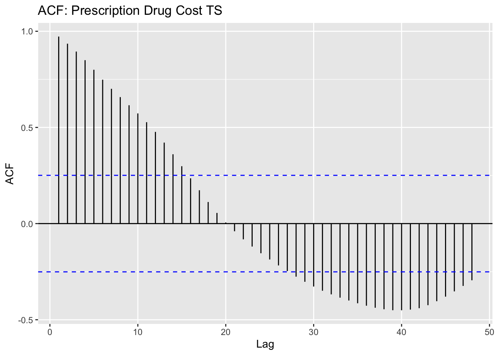
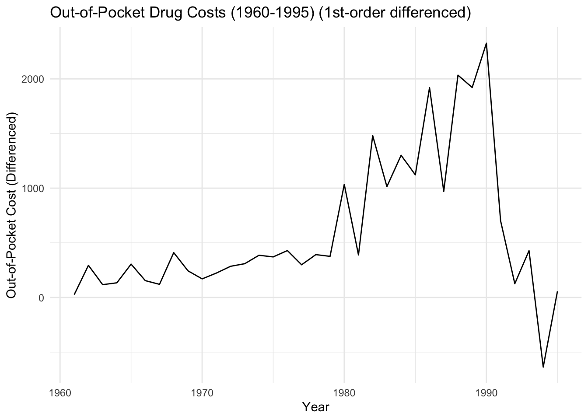

Code
ggAcf(drug.ts, 48, main = "ACF: Prescription Drug Cost TS")
Code
ggPacf(drug.ts, 48, main = "PACF: Prescription Drug Cost TS")To review, we learned in the EDA tab that the prescription drug cost data is non-stationary based on the results of the ACF plot and the Augmented Dickey-Fuller test, seen below.
ggAcf(drug.ts, 48, main = "ACF: Prescription Drug Cost TS")
ggPacf(drug.ts, 48, main = "PACF: Prescription Drug Cost TS")tseries::adf.test(drug.ts)
Augmented Dickey-Fuller Test
data: drug.ts
Dickey-Fuller = -2.5484, Lag order = 3, p-value = 0.353
alternative hypothesis: stationaryAdditionally, we also learned that the U.S. Pharmaceutical ETF closing prices dataset was non-stationary, as seen below.
ggAcf(pharma.ts, 48, main = "ACF: IHE ETF TS")
ggPacf(pharma.ts, 48, main = "PACF: IHE ETF TS")
tseries::adf.test(pharma.ts)
Augmented Dickey-Fuller Test
data: pharma.ts
Dickey-Fuller = -2.1149, Lag order = 5, p-value = 0.528
alternative hypothesis: stationaryAs seen in the last section, we can confirm that both datasets in this study are non-stationary. So, before moving on to ARIMA modeling, it is necessary to transform the dataset so that it is at least weakly stationary.
require(gridExtra)
drug.fit = lm(drug.ts~time(drug.ts), na.action = NULL)
plot1<-autoplot(resid(drug.fit), main="Drug Cost: Detrended")
plot2<-autoplot(diff(drug.ts), main="Drug Cost: First Difference")
grid.arrange(plot1, plot2,nrow=2)Next, we can look at the ACF plots to compare the detrended dataset and the differenced dataset. Both detrending and first-order differencing are pretty successful in making the data more stationary. Because the differencing is a bit more successful at making the dataset stationary, I will proceed with that first-order differenced dataset for modeling.
require(gridExtra)
# plot1 = ggAcf(drug.ts, 48, main="Original Data: Drug Cost")
plot2 = ggAcf(resid(drug.fit), 48, main="Detrended Data: Drug Cost")
plot3 = ggAcf(diff(drug.ts), 48, main="First Differenced Data: Drug Cost")
grid.arrange(plot2, plot3,nrow=2)drug.diff = diff(drug.ts)To determine the p,d, and q parameters for ARIMA, we need to take another look at the ACF and PACF plots.
Because the data was differenced one time, we can say that d will be equal to 1.
There are 3 significant lag terms in the ACF, meaning that the initial q value will be equal to 3. There is 1 significant lag term in the PACF, so the initial p value will be equal to three.
ggAcf(drug.diff, 48, main="ACF: Differenced Data")
ggPacf(drug.diff, 48, main="PACF: Differenced Data")We can now proceed with the ARIMA(1,1,3) model.
As seen below, the p-values in the Ljung-Box statistic are very small in most cases, suggesting that the values might be showing some dependence on each other.
The AIC and BIC are 17.6 and 17.8, respectively.
Additionally, we can see that the only the AR(1) and MA(1) coefficients have small enough values to be significant in the model. This means that MA(2) and MA(3) are insignificant, and that removing the second and third MA parameters from the model may improve its performance.
set.seed(73)
drug.arima113 = capture.output(sarima(drug.diff, 1,1,3))cat(drug.arima113[142:168], drug.arima113[length(drug.arima113)], sep = "\n")
Coefficients:
ar1 ma1 ma2 ma3 constant
0.7113 -0.8990 -0.2796 0.1785 -7.3396
s.e. 0.1828 0.2181 0.2209 0.1857 30.2138
sigma^2 estimated as 1963201: log likelihood = -512.47, aic = 1036.94
$degrees_of_freedom
[1] 54
$ttable
Estimate SE t.value p.value
ar1 0.7113 0.1828 3.8907 0.0003
ma1 -0.8990 0.2181 -4.1218 0.0001
ma2 -0.2796 0.2209 -1.2657 0.2110
ma3 0.1785 0.1857 0.9615 0.3406
constant -7.3396 30.2138 -0.2429 0.8090
$AIC
[1] 17.57523
$AICc
[1] 17.59442
$BIC
[1] 17.78651Because MA2 and MA3 are insignificant in the model above, I am going to test ARIMA(1,1,1) to see if this improves model performance and reduces error.
Overall, this model seems to perform a bit better than ARIMA(1,1,3). The p-values for Ljung-Box are larger across the board, and the AIC and BIC error have decreased slightly to 17.5 and 17.7, respectively. Additionally, we can see that all coefficients in the model are significant.
set.seed(73)
drug.arima111 = capture.output(sarima(drug.diff, 1,1,1))cat(drug.arima111[72:96], drug.arima111[length(drug.arima111)], sep = "\n")
Coefficients:
ar1 ma1 constant
0.689 -0.9998 -7.2324
s.e. 0.102 0.0547 30.7778
sigma^2 estimated as 2024579: log likelihood = -513.31, aic = 1034.63
$degrees_of_freedom
[1] 56
$ttable
Estimate SE t.value p.value
ar1 0.6890 0.1020 6.7567 0.0000
ma1 -0.9998 0.0547 -18.2728 0.0000
constant -7.2324 30.7778 -0.2350 0.8151
$AIC
[1] 17.53608
$AICc
[1] 17.54348
$BIC
[1] 17.67693As a result, I will be proceeding with ARIMA(1,1,1) as my manually-selected ARIMA model for this dataset.
In R, auto.arima() is a function that automatically selects ARIMA parameters when fed a set of time-series data.
Using the function with the differenced out-of-pocket prescription drug cost dataset, we get:
auto.arima(drug.diff)Series: drug.diff
ARIMA(1,0,0) with zero mean
Coefficients:
ar1
0.7006
s.e. 0.0900
sigma^2 = 2063958: log likelihood = -521.17
AIC=1046.35 AICc=1046.56 BIC=1050.54The auto.arima() function suggests that an ARIMA(1,0,0), or AR(1), model is this best for the differenced time series dataset.
Although I was initially suspicious of how this would perform, this model does in fact appear to be a slightly better fit than my previous models. Not only is the coefficient significant, but the Ljung-Box p-values are all significantly different from zero. Additionally, the AIC and BIC have decreased further to 17.4 and 17.5, respectively.
drug.arima100 = capture.output(sarima(drug.diff, 1,0,0))
cat(drug.arima100[28:50], drug.arima100[length(drug.arima100)], sep = "\n")Coefficients:
ar1 xmean
0.660 625.6818
s.e. 0.097 521.0468
sigma^2 estimated as 1991712: log likelihood = -520.56, aic = 1047.11
$degrees_of_freedom
[1] 58
$ttable
Estimate SE t.value p.value
ar1 0.6600 0.0970 6.8022 0.0000
xmean 625.6818 521.0468 1.2008 0.2347
$AIC
[1] 17.45191
$AICc
[1] 17.45542
$BIC
[1] 17.55663As seen above, the auto.arima() selection is different than my manually chosen model of ARIMA(1,1,1). I am not exactly sure why this is the case, but it may have something to do with the auto.arima() function prioritizing a lower number of parameters when there is little performance improvement from adding additional parameters.
Next, I want to forecast the next ten years of out-of-pocket drug costs for both my manually-selected ARIMA(1,1,1) model and the auto.arima() selected ARIMA(1,0,0) model.
As can be seen below, there is practically no difference between the two selected models when it comes to forecasting.
drug.diff %>% Arima(order = c(1,1,1), include.drift = TRUE) %>%
forecast %>%
autoplot()+
ylab("Out-of-pocket Drug Cost Predictions")+theme_minimal()
drug.diff %>% Arima(order = c(1,0,0), include.drift = TRUE) %>%
forecast %>%
autoplot()+
ylab("Out-of-pocket Drug Cost Predictions")+theme_minimal()Finally, I am going to compare my chosen ARIMA model to some simple benchmark models to prove its comparative forecasting power. To do this, I will test the three methods: mean forecasting, naive forecasting, and my ARIMA(1,0,0) and see their ability to predict the ten-year interval from 1995 to 2005.
As a reminder, here is the time series plot for the first-order differenced data.
autoplot(drug.diff)+ggtitle("Out-of-Pocket Drug Costs (1960-2020) (1st-order differenced)")+xlab("Year")+ylab("Out-of-Pocket Cost (Differenced)")+theme_minimal()
Selecting only the the window of interesting, the plot looks like:
drug.diff2 = window(drug.diff, start=1960, end=1995)
autoplot(drug.diff2)+ggtitle("Out-of-Pocket Drug Costs (1960-1995) (1st-order differenced)")+xlab("Year")+ylab("Out-of-Pocket Cost (Differenced)")+theme_minimal()
Mean
drug.mean = meanf(drug.diff2, h=10)
checkresiduals(drug.mean)
Ljung-Box test
data: Residuals from Mean
Q* = 37.841, df = 6, p-value = 1.207e-06
Model df: 1. Total lags used: 7Naive Method
drug.naive = naive(drug.diff2, h=10)
checkresiduals(drug.naive)
Ljung-Box test
data: Residuals from Naive method
Q* = 19.811, df = 7, p-value = 0.005992
Model df: 0. Total lags used: 7Now, I will plot all forecasts together:
autoplot(drug.diff2) +
autolayer(meanf(drug.diff2, h=10), series = "Mean", PI=FALSE)+
autolayer(naive(drug.diff2, h=10), series = "Naive", PI=FALSE)+
drug.diff2 %>% Arima(order = c(1,0,0), include.drift = TRUE) %>%
forecast %>%
autolayer(series = "ARIMA(1,0,0)", PI=FALSE)+
ggtitle("10-Year Forecast (1995-2005) for Out-of-Pocket Drug Costs")+xlab("Year")+ylab("Out-of-Pocket Cost (Differenced)")+guides(colour=guide_legend(title = "10-Yr Forecast"))+theme_minimal()
When compared to the original data, it is clear that the ARIMA model does a better job of forecasting that the mean and naive methods. That being said, none of the models are able to forecast the incredibly steep spike in out-of-pocket prescription drug costs beginning in 1994.
drug.diff3=window(drug.diff, start=1960, end=2005)
autoplot(drug.diff3) +
autolayer(meanf(drug.diff2, h=10), series = "Mean", PI=FALSE)+
autolayer(naive(drug.diff2, h=10), series = "Naive", PI=FALSE)+
drug.diff2 %>% Arima(order = c(1,0,0), include.drift = TRUE) %>%
forecast %>%
autolayer(series = "ARIMA(1,0,0)", PI=FALSE)+
ggtitle("Forecasting Out-of-Pocket Drug Costs")+xlab("Year")+ylab("Out-of-Pocket Cost (Differenced)")+guides(colour=guide_legend(title = "10-Yr Forecast"))+theme_minimal()
To analyze seasonal data as it relates to this topic, I want to take a look at the year over year weekly flu deaths in the United States to determine if it is in fact seasonal and if flu deaths can be predicted.
The purpose of including this ties into the time series data on out-of-pocket prescription drug costs. Although it difficult to find time series data on illnesses that often require high-cost prescription drugs like chronic pain, diabetes, depression, and so on, there is a wealth of collected influenza data that can be converted into a time series format.
Tamiflu is an antiviral drug often prescribed by doctors to treat the flu by preventing it from multiplying further in the body as well as curbing severe flu symptoms. It along with vaccines is one of the many reasons why the once deadly common flu is less dangerous today than it was in decades past.
Although it is not a perfect comparison to other high-cost drugs, the current price of Tamiflu as of April 2023 can range anywhere from $156 USD to $169 USD for a 10-capsule supply for those without insurance. If we can confirm seasonality of flu deaths, we confirm that there are times of the year in which pharmaceutical companies like Genetech, the maker of Tamiflu, made high profits at what may be an unreasonably high cost to lower-income consumers.
flu = read.csv('datasets/flu_deaths.csv')
flu$Date = as.Date(flu$Date, format = "%m/%d/%Y")
flu$Date = format(flu$Date, format = "%Y-%m-%d")
flu.ts = subset(flu, select = Influenza.Deaths)
flu.ts = ts(flu.ts, start=c(2014,52),frequency = 52)autoplot(flu.ts, main = "Weekly Influenza Deaths in the U.S. (2015-2023)", ylab = "Influenza Deaths", xlab = "Year")+theme_minimal()Looking at the decomposition below, we can see evidence of what looks like seasonality in the data.
# add_fluts = ts(flu.ts, frequency = 4)
decompose_flu = decompose(flu.ts)
autoplot(decompose_flu)Looking at the lag and ACF plots below as well, we can see what looks like further confirmation of seasonality.
gglagplot(flu.ts, do.lines = FALSE) + xlab("Lags") + ylab("Yi") + ggtitle("Lag Plot: Influenza Deaths") + theme(axis.text.x = element_text(angle=45, hjust = 1))ggAcf(flu.ts, main = "ACF: Influenza Deaths TS")To ensure this is is the case, I will perform the Ljung-Box on the residuals of the influenza deaths time series data.
The extremely small p-value means that the null hypothesis of independently distributed residuals can be rejected, indicating seasonality of the data.
residuals <- flu.ts - decompose_flu$trend - decompose_flu$seasonal
Box.test(residuals, type="Ljung-Box")
Box-Ljung test
data: residuals
X-squared = 349.15, df = 1, p-value < 2.2e-16Now that the seasonality of the influenza data has been confirmed, differencing needs to be performed before SARIMA modeling can occur.
To recap, by looking at the ACF plot for this data set we can confirm that the data is not stationary and follows a clearly seasonal pattern.
ggAcf(flu.ts, 40, main = "ACF: Influenza Deaths TS")To make the data stationary, I will perform both regular, first-order differencing on the data as well as seasonal differencing. The resulting ACF plot following this differencing is below.
At first glance, it is hard to determine if it is stationary for sure. The lag decreases quickly over time, but to be sure, I will perform an Augmented Dickey-Fuller test with an \(\alpha = 0.05\) significance level.
flu_diff = diff(flu.ts, lag = 52, differences = 1)
ggAcf(flu_diff, 40, main = "ACF: Differenced Influenza Deaths TS")Warning: Ignoring unknown parameters: mainAs can be seen below, the result of the ADF test results in a p-value of 0.01. Because this is less than my set significance level, I will conclude that the data set is now stationary enough to move on to SARIMA modeling.
adf.test(flu_diff)
Augmented Dickey-Fuller Test
data: flu_diff
Dickey-Fuller = -4.23, Lag order = 7, p-value = 0.01
alternative hypothesis: stationaryNow that the data is in the proper format, the first step of SARIMA modeling is to find the regular and seasonal parameters to use in our equation.
Because regular first-order differencing and seasonal differencing was performed on the model, we know that both d and D should be equal to 1.
For the ARIMA terms, looking at the PACF plot would suggest 2 AR terms for the model. Looking at the ACF plot is a bit more difficult, as the lags extend pretty far. Because of this, I am going to select an MA term of 4 for this iteration, as I do not believe increasing this number will have much of an impact on model performance.
For the SARIMA terms, the same rule applies but considers the seasonal lag, which can be seen below at Lag 52. Because the PACF plot does not show a lag extending beyond the condfidence interval at lag 52, I am going to select an SAR term of 0. For the SAR term, we do see a lag extend beyond the interval at 52, but not at 104. Because of this, I will select an SAR term of 1.
ggAcf(flu_diff)ggPacf(flu_diff)So, the resulting parameters for the model will be: SARIMA(2,1,4)x(0,1,1)
Now, I will proceed with modeling and modeling diagnostics for my chosen parameters.
In the results of the model seen below, we can see that the p-values in the Ljung-Box statistic are relatively high, suggesting that the values are independent from one another.
flu.fit = capture.output(sarima(flu.ts, p = 2, d = 1, q = 4, P = 0, D = 1, Q = 1, S = 52))cat(flu.fit[80:113], flu.fit[length(flu.fit)], sep = "\n")Call:
arima(x = xdata, order = c(p, d, q), seasonal = list(order = c(P, D, Q), period = S),
include.mean = !no.constant, transform.pars = trans, fixed = fixed, optim.control = list(trace = trc,
REPORT = 1, reltol = tol))
Coefficients:
ar1 ar2 ma1 ma2 ma3 ma4 sma1
1.7059 -0.7643 -1.0780 0.0549 -0.0521 0.0919 -0.9735
s.e. 0.0769 0.0711 0.0931 0.0814 0.0857 0.0708 NaN
sigma^2 estimated as 1778: log likelihood = -2001.98, aic = 4019.95
$degrees_of_freedom
[1] 371
$ttable
Estimate SE t.value p.value
ar1 1.7059 0.0769 22.1754 0.0000
ar2 -0.7643 0.0711 -10.7477 0.0000
ma1 -1.0780 0.0931 -11.5824 0.0000
ma2 0.0549 0.0814 0.6746 0.5003
ma3 -0.0521 0.0857 -0.6082 0.5434
ma4 0.0919 0.0708 1.2967 0.1955
sma1 -0.9735 NaN NaN NaN
$AIC
[1] 10.6348
$AICc
[1] 10.6356
$BIC
[1] 10.71808The resulting model has AIC 10.63 and BIC 10.72. When looking at the coefficients, we can see that MA(2), MA(3) and MA(4) are insignificant. I will remove these terms from the next SARIMA model to see if this will improve model performance.
flu.fit2 = capture.output(sarima(flu.ts, p = 2, d = 1, q = 1, P = 0, D = 1, Q = 1, S = 52))cat(flu.fit2[56:85], flu.fit2[length(flu.fit2)], sep = "\n")Call:
arima(x = xdata, order = c(p, d, q), seasonal = list(order = c(P, D, Q), period = S),
include.mean = !no.constant, transform.pars = trans, fixed = fixed, optim.control = list(trace = trc,
REPORT = 1, reltol = tol))
Coefficients:
ar1 ar2 ma1 sma1
1.6206 -0.6882 -0.9835 -0.9317
s.e. 0.0381 0.0381 0.0152 0.2151
sigma^2 estimated as 1854: log likelihood = -2003.02, aic = 4016.05
$degrees_of_freedom
[1] 374
$ttable
Estimate SE t.value p.value
ar1 1.6206 0.0381 42.4829 0
ar2 -0.6882 0.0381 -18.0623 0
ma1 -0.9835 0.0152 -64.5593 0
sma1 -0.9317 0.2151 -4.3318 0
$AIC
[1] 10.62446
$AICc
[1] 10.62475
$BIC
[1] 10.67651When removing the insignificant terms from the previous model, we see that AIC and BIC have been very slightly reduced to 10.62 and 10.68, respectively.
Like I did before with my ARIMA model, I am going to use auto.arima() to see if model performance can be increased on the SARIMA model to effectively predict future deaths caused by influenza.
According to auto.arima(), the parameters for the best seasonal model are SARIMA(4,0,0)x(0,0,2). Although it seems to pass the Ljung-Box test, the AIC and BIC values are extremely high. As a result, I will use my chosen reduced model for forecasting.
auto.arima(flu.ts, seasonal = TRUE)Series: flu.ts
ARIMA(4,0,0)(0,0,2)[52] with non-zero mean
Coefficients:
ar1 ar2 ar3 ar4 sma1 sma2 mean
1.6559 -0.7493 0.0439 -0.0109 0.0870 0.1880 126.0456
s.e. 0.0510 0.0982 0.0983 0.0511 0.0552 0.0548 43.2511
sigma^2 = 2031: log likelihood = -2253.37
AIC=4522.75 AICc=4523.09 BIC=4555.28auto.fit = capture.output(sarima(flu.ts, p = 4, d = 0, q =0, P = 0, D = 0, Q = 2, S = 52))Finally, I am going to forecast the number of influenza deaths in the U.S. in the two years. To do this, I will be using my reduced hand-selected SARIMA model, with the parameters SARIMA(2,1,1)x(0,1,1).
flu.ts %>% Arima(order = c(2,1,1), seasonal = c(0,1,1)) %>%
forecast %>%
autoplot()+
ylab("Count of Influenza Deaths")+theme_minimal()As I did before, I am going to use a window of data to see how effectively the benchmark methods perform against the SARIMA model. To do this, I am going to set a window starting at 2015 and ending at 2019 instead of the original 2023.
The plot of the window of data can be seen below:
flu.window = window(flu.ts, start = 2015, end = 2019)
autoplot(flu.window)+ggtitle("U.S. Influenza Deaths (2015-2019)")+xlab("Year")+ylab("Count of Influenza Deaths")+theme_minimal()Mean
flu.mean = meanf(flu.window, h=2)
checkresiduals(flu.mean)
Ljung-Box test
data: Residuals from Mean
Q* = 1031.4, df = 41, p-value < 2.2e-16
Model df: 1. Total lags used: 42Naive
flu.naive = naive(flu.window, h=2)
checkresiduals(flu.naive)
Ljung-Box test
data: Residuals from Naive method
Q* = 244.81, df = 42, p-value < 2.2e-16
Model df: 0. Total lags used: 42Now, I will plot the three forecasts together: my SARIMA model, the Mean, and the Naive model to see which performs the best in terms of prediction
Comparing against the original data:
autoplot(flu.ts) +
autolayer(meanf(flu.window, h=208), series = "Mean", PI=FALSE)+
autolayer(naive(flu.window, h=208), series = "Naive", PI=FALSE)+
flu.window %>% Arima(order = c(2,1,1), seasonal = c(0,1,1)) %>%
forecast %>%
autolayer(series = "SARIMA(2,1,1)x(0,1,1)", PI=FALSE)+
ggtitle("Forecasting Influenza Deaths")+xlab("Year")+ylab("Count of Influenza Deaths")+guides(colour=guide_legend(title = "Forecast"))+theme_minimal()
Unfortunately, it looks like the SARIMA model performs pretty poorly based off of the short window alone. However, it is important to note that when predicting into the future, the SARIMA model seems to map a very feasible pattern of predictions. Because of this, I would still argue it is a better model than the benchmark methods, as it is able to more accurately capture the ebbs and flows of seasonality.
autoplot(flu.ts)+
flu.ts %>% Arima(order = c(2,1,1), seasonal = c(0,1,1)) %>%
forecast %>%
autolayer(series = "SARIMA(2,1,1)x(0,1,1)", PI=FALSE)+ggtitle("Forecasting Influenza Deaths")+xlab("Year")+ylab("Count of Influenza Deaths")+guides(colour=guide_legend(title = "Forecast"))+theme_minimal()Finally, I want to perform seasonal cross validation using a 1-step ahead forecast and an s-step ahead forecast. Because the data is weekly time series, the one step time series will be 52 weeks.
k = 75 #minimum model fitting length
n = length(flu.ts)
# n-kI will once again use my previously determined SARIMA(2,1,1)x(0,1,1) model for the cross-validation. The MAE and RMSE of the 1-step cross-validation are listed below.
farima1 = function(x,h){forecast(Arima(flu.ts, order = c(2,1,1), seasonal = c(0,1,1)), h=h)}
ts1.res = tsCV(flu.ts, farima1, h=1)
length(ts1.res)[1] 431MAE1 = abs(mean(ts1.res, na.rm = TRUE))
RMSE1 = sqrt(mean(ts1.res^2, na.rm = TRUE))
print("MAE:")[1] "MAE:"MAE1[1] 131.4065print("RMSE:")[1] "RMSE:"RMSE1[1] 278.3929Next, I will perform the s-step (52-step) cross-validation. The MAE and RMSE of the 52-step cross-validation are listed below.
ts52.res = tsCV(flu.ts, farima1, h=52)
length(ts52.res)[1] 22412MAE2 = abs(mean(ts52.res, na.rm = TRUE))
RMSE2 = sqrt(mean(ts52.res^2, na.rm = TRUE))
print("MAE:")[1] "MAE:"MAE2[1] 20.14897print("RMSE:")[1] "RMSE:"RMSE2[1] 292.686Finally, I will plot the MSE values against the forecast horizon for the 52-step cross-validation.
flu.mse = colMeans(ts52.res^2, na.rm = TRUE)
data.frame(h=1:52, MSE = flu.mse) %>%
ggplot(aes(x = h, y = MSE)) + geom_point()